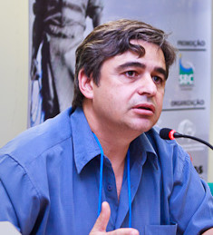

Em breve serão detalhados abaixo todos os minicursos que foram convidados para a ERAD/RS 2026
Minicurso
Fundamentos de Deep Learning
Horário e local: Data/Horário — Lab
Resumo: Este curso tem como objetivo capacitar os alunos a compreender como o deep learning funciona por meio de exercícios práticos em visão computacional e processamento de linguagem natural. Será apresentado o processo de treinamento de modelos de deep learning do zero, usando ferramentas e técnicas para alcançar resultados mais precisos. Também será abordado como utilizar modelos pré-treinados de última geração, disponíveis gratuitamente, para economizar tempo e colocar sua aplicação de deep learning em funcionamento rapidamente.
Autores
Sandro da Silva Camargo
Doutor (2010) e Mestre (2002) em Ciência da Computação pela Universidade Federal do Rio Grande do Sul (UFRGS) e Bacharel (1996) em Informática pela Universidade da Região da Campanha (URCAMP). É professor do ensino superior desde 2000 e, desde 2011, atua como Professor Associado na Universidade Federal do Pampa (UNIPAMPA), onde é docente permanente do Programa de Pós-Graduação em Computação Aplicada (PPGCAP) e membro do Núcleo de Pesquisa em Pecuária de Precisão (NP3), colaborando com pesquisadores da Embrapa Pecuária Sul. Na UFRGS, integrou a equipe responsável pela implantação do Laboratório de Bioinformática do Projeto Rede Sul de Análise de Genomas e Biologia Estrutural (Rede PIGS), em 2003, e participou do sequenciamento do genoma do Mycoplasma hyopneumoniae no âmbito do Projeto Genesul (2004). Desde janeiro de 2026, é instrutor certificado e embaixador universitário da NVIDIA. Atua principalmente nas áreas de Deep Learning, Redes Neurais e Computação Aplicada à Pecuária de Precisão.
Minicurso
Programação Multithread Além das Seções Críticas
Horário e local: Data/Horário — Lab
Resumo: Este curso aborda modelos contemporâneos de concorrência que superam a abordagem clássica centrada em regiões críticas, mutexes e controle manual de acesso à memória compartilhada. Partindo da revisão dos problemas tradicionais de sincronização, o recorte enfatiza abstrações de mais alto nível que promovem segurança, escalabilidade e expressividade, como comunicação por canais, tipagem com garantias em tempo de compilação, programação assíncrona e modelo de atores. São analisadas as soluções oferecidas por C++, Go, Rust e Elixir, destacando como cada linguagem trata criação de unidades concorrentes e resolve alternativamente a questão da comunicação entre fluxos de execução concorrente. O objetivo é capacitar o participante a compreender os compromissos entre desempenho, complexidade e segurança, e a selecionar modelos mais adequados a diferentes cenários, privilegiando abordagens que reduzam condições de corrida e a necessidade de controle explícito de seções críticas.
Autores

Gerson Geraldo Homrich Cavalheiro (em coautoria com André Du Bois e Alexandro Baldassim)
Possui graduação em Informática pela Pontifícia Universidade Católica do Rio Grande do Sul (1990), mestrado em Computação pela Universidade Federal do Rio Grande do Sul (1994) e doutorado em Informatique Systèmes et Communications - Institut National Polytechique de Grenoble (1999). Desde 2023 é Professor Titular da Universidade Federal de Pelotas, ministrando disciplinas associadas à Linguagens de Programação, Sistemas Computacionais e Processamento Paralelo e Ditribuído, atuando tanto em cursos de graduação como de pós graduação em nível de mestrado e doutorado. Tem experiência na área de Ciência da Computação, com ênfase em Processamento de Alto Desempenho, sendo seus principais focos de atenção: linguagens de programação, ambientes de execução, processamento de alto desempenho, aplicações, programação concorrente e ambiente de programação.
Minicurso
Análise de Desempenho de Sistemas Computacionais: Fundamentos e Metodologia Científica para HPC
Horário e local: Data/Horário — Lab
Resumo: A análise de desempenho é fundamental para o desenvolvimento e otimização de sistemas computacionais, especialmente em aplicações de Alto Desempenho (HPC), porém a área é frequentemente negligenciada na formação acadêmica, resultando em estudos com metodologia inadequada, resultados não reprodutíveis e conclusões equivocadas. Este minicurso tem como objetivo geral capacitar os participantes a planejar, executar e reportar experimentos de avaliação de desempenho de sistemas computacionais de forma metodologicamente rigorosa e reprodutível, combinando os fundamentos consolidados de livros clássico de análise de desempenho com princípios modernos de metodologia científica e reprodutibilidade na área de HPC.
Autores
Lucas Mello Schnorr
Possui graduação em Ciência da Computação pela Universidade Federal de Santa Maria(2003), mestrado em Computação pela Universidade Federal do Rio Grande do Sul(2005), doutorado em Computação pela Universidade Federal do Rio Grande do Sul(2009), pós-doutorado pela Centre National de la Recherche Scientifique(2011) e pós-doutorado pela Institut National de Recherche en Informatique et en Automatique - Siège(2017). Atualmente é Professor Associado da Universidade Federal do Rio Grande do Sul, Revisor de periódico da JOURNAL OF PARALLEL AND DISTRIBUTED COMPUTING, Revisor de periódico da CONCURRENCY AND COMPUTATION-PRACTICE & EXPERIENCE, Revisor de periódico da Ecological Informatics, Revisor de periódico da PARALLEL COMPUTING e Revisor de periódico da Journal of Open Research Software. Tem experiência na área de Ciência da Computação, com ênfase em Sistemas de Computação.
Minicurso
Aprendizado de Máquina Clássico em Escala: dos Fundamentos à Classificação Tumoral com Metilação do DNA
Horário e local: Data/Horário — Lab
Resumo: Curso centrado no aprendizado de máquina clássico, com ênfase em decisões práticas para trabalhar com dados de alta dimensionalidade. Aborda a preparação de conjuntos de dados, protocolos de validação e métricas de desempenho para regressão, classificação e clusterização, incluindo a interpretação por meio de matrizes de confusão e a análise de erros. Estudo e comparação de modelos supervisionados clássicos: regressão linear e métodos baseados em árvores para predição; regressão logística, Random Forest e SVM para classificação, com discussão sobre generalização, overfitting, trade-offs de desempenho e interpretabilidade. Métodos não supervisionados para exploração de estrutura: k-means, clusterização hierárquica (Ward) e DBSCAN, com critérios de escolha e avaliação. Redução dimensional e visualização em alta dimensionalidade (PCA, t-SNE, UMAP) e avaliação do impacto da redução na classificação. Encerramento com aplicação integradora: desenho de um pipeline leve e reprodutível para a classificação tumoral a partir da metilação do DNA.
Autores
Paulo Roberto Ferreira Júnior
Professor Titular no Centro de Desenvolvimento Tecnológico da Universidade Federal de Pelotas (UFPel) e Reitor eleito na UFPel para o mandato de 2021 a 2024 e não nomeado pelo Presidente da República. Foi Pró-Reitor de Planejamento e Desenvolvimento da UFPel entre 2021 e 2024. Foi Bolsista de Produtividade em Desenvolvimento Tecnológico e Extensão Inovadora 2 (DT2) de 2018 a 2020. Foi bolsista Google pelo programa Latin America Research Award 2018 e 2019. Possui Doutorado em Ciência da Computação pela UFGRS - Universidade Federal do Rio Grande do Sul (2008) e mestrado, na mesma área, pela UNICAMP - Universidade Estadual de Campinas (2000). Realizou estágio pós-doutoral no Real-Time Systems Research Group at York, University of York - Reino Unido (2015). Fundou a WZERO Soluções para Internet, empresa de base tecnológica pioneira no desenvolvimento de aplicações móveis WAP (Wireless Application Protocol) e de TV interativa, tendo atuado como Diretor e Engenheiro de Software. Atualmente é membro do Grupo de Pesquisa em Engenharia de Sistemas Ciber-Físicos, atuando nas áreas de Inteligência Artificial e Sistemas Ciber-físicos, envolvendo Inteligência de Enxames, Redes de Sensores Sem Fio e Planejamento com Robôs de Serviço e VANTs. Leciona disciplinas e orienta nos cursos de graduação em Ciência da Computação, Engenharia da Computação e Design de Jogos, além de atuar no Programa de Pós-Graduação em Computação em níveis de Metrado e Doutorado. Possui 5 orientações de mestrado e 5 de doutorado concluídas. É membro e atualmente está como vice-presidente financeiro do Conselho Curador da Robocup Brasil, tendo sido o General Chair da Competição Brasileira de Robótica (CBR/LARC) nas edições 2017 e 2018. Publicou diversos trabalhos completos em anais de eventos e artigos em periódicos, com regularidade. Destaca-se o artigo publicado na revista Drones em 2019, de grande impacto (JCR 4.8), e que figura como o artigo mais citado desta revista. Produziu um simulador para Redes de Sensores Sem Fio, denominado EBORACUM Wireless Sensor Networks framework for PtolemyII/VisualSense, disponível no Sourceforge, em colaboração com a University of York. Lidera o projeto de ensino Liga Acadêmica de Robótica: Pinguinbots, cujo time de Robôs de Serviço obteve o terceiro lugar na liga @home da CBR/LARC 2023; o projeto de pesquisa e desenvolvimento tecnológico Sistemas Ciber-Físicos Inteligentes para o Manejo Integrado de Pragas em parceria com a empresa Partamon; e o projeto de extensão inovadora Desenvolvimento de Tecnologias de Robótica Móvel para Veículos Elétricos Autônomos e Robôs de Serviço em parceria com a empresa Freedom.
Minicurso
A ser anunciado
Horário e local: Data/Horário — Lab
Resumo: A ser anunciado
Autores
Arthur Francisco Lorenzon
Doutor em Ciência da Computação pela Universidade Federal do Rio Grande do Sul (UFRGS), desde 2018. Atuou como pesquisador visitante em diversas instituições, incluindo Delft University of Technology, Barcelona Supercomputing Center e Oak Ridge National Laboratory. Sua tese de doutorado foi escolhida como a melhor tese na área de arquitetura de computadores e computação de alto desempenho no WSCAD-CTD, em 2018. Atualmente, integra o corpo docente do Instituto de Informática da UFRGS, orientando alunos de mestrado e doutorado no Programa de Pós-Graduação em Computação (PPGC). Desenvolve atividades de pesquisa na área de computação de alto desempenho, com foco no desenvolvimento de soluções para otimizar o uso dos recursos computacionais ao executar aplicações paralelas. Por fim, desde o começo de 2022, Lorenzon é Embaixador Universitário nível Platinum do Deep Learning Institute, da NVIDIA.